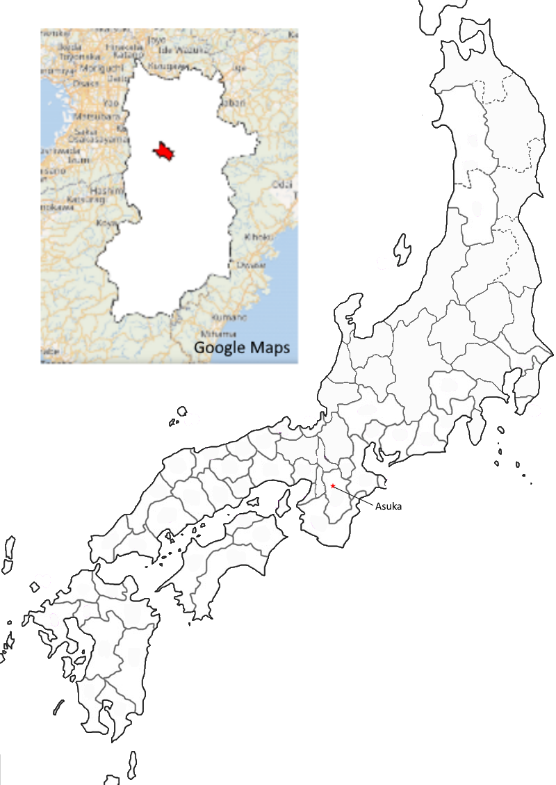

Poem 284
tatsutagawa
momijiba nagaru
kamunabi no
mimuro no yama ni
shigure fururashi
Another version:
asukagawa
momijiba nagaru
Late autumn showers
must be falling at Mimuro,
the divine mountain,
for colored leaves are floating
on the Tatsuta River.
for colored leaves are floating
on the Asuka River
Poem 341
kino to ii
kyo to kurashite
asukagawa
nagarete hayaki
tsukihi narikeri
Swift is their passage
as the flow of the Asuka,
"Tomorrow River" -
the long months I spend saying,
"yesterday," "today," "tomorrow."

Cultural significance
In Yamato, a river celebrated for its change of course and for possible play on asu- as “tomorrow” (Miner et al.)
Asuka is the name of a shrine and it has its local deity, Asuka nimasu kami (Plutschow)
Asuka used to be the home of the capital until Emperor Tenchi (662-671) moved it to О̄mi in 668. Tenchi’s death led to a succession battle (Jinshin War) between two sides based in О̄mi and Yoshino (close to Asuka). The Yoshino side won, and the new emperor, О̄ama (Emperor Tenmu) moved the capital to the Asuka region. In “Poems on Passing the Ruined Capital of О̄mi”, Kakimoto no Hitomaro praised Asuka for being situated directly underneath heaven, and described it as the place from which all rulers before and after Tenchi had ruled (Duthie).